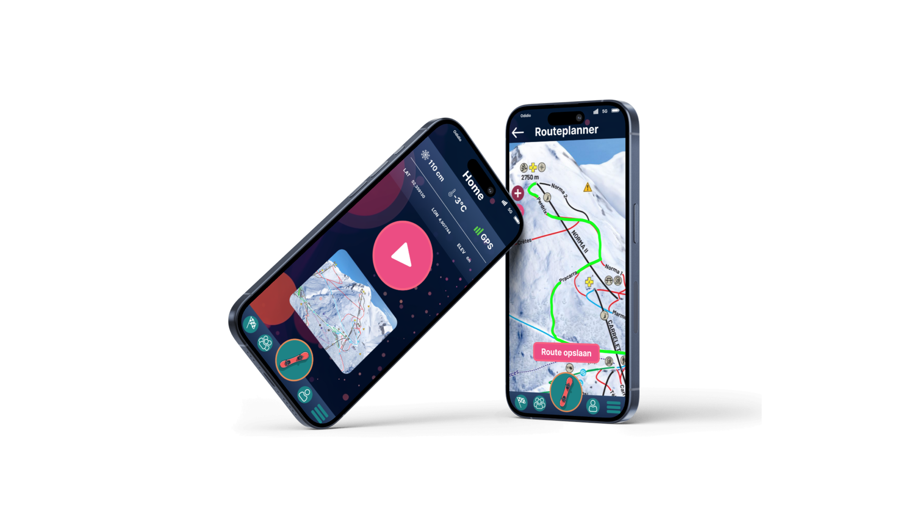

Powder
Back
De opdracht
Type: Individueel Project
Bedenk en ontwerp een multi-device ervaring voor een bepaalde activiteit (reizen, fitness, bioscoop
bezoek, ...).
Denk met name aan de gebruikersdoelen die telkens voor, tijdens en na deze
activiteit
belangrijk zijn, en welk device in welk stadium het meest geschikt zou zijn.
Het idee
Een van mijn favoriete activiteiten is snowboarden. Hierbij wil ik graag altijd mijn snelheiden, afstanden etc. bijhouden. Er bestaan dergelijke ski-track apps, maar nog niks voor snowboarders.
Mijn idee is een app waar je een tracker hebt, een interactieve kaart om je route te plannen en een kleine community om dingen met je vrienden te delen.
Voor de opdracht heb ik gekozen voor 3 devices:
Iphone
Applewatch
Airpods(voor auditieve
feedback).
Het proces
Ik ben begonnen met ideegeneratie en onderzoek. Vervolgens heb ik gekeken naar wat de gebruiker wil. Uiteindelijk resulteert dit in een eerste versie van mijn ontwerp, waarin ik verder in detail treed. Het uiteindelijke ontwerp in hoge resolutie is gericht op het optimaliseren van de technologie voor mijn gebruiker.
User Scenario -> User Journey -> Product Requirements -> Desk Research -> Wireflow -> Screenflow

Screenshots